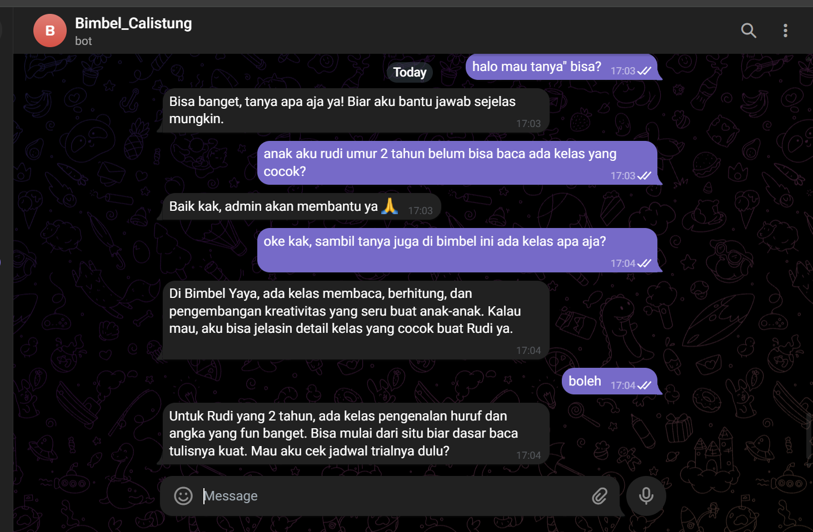

Data Cleaning
Membersihkan dan menyiapkan data agar lebih konsisten dan siap dianalisis.
- Remove duplicates
- Handle missing values
- Standardize format
- Data validation
DATA • AI • DIGITAL SOLUTIONS
Saya membantu mengubah data mentah menjadi data yang lebih rapi, insight yang mudah dipahami, dan dashboard yang membantu bisnis melihat apa yang sebenarnya terjadi di balik data.
Mulai dari data yang berantakan sampai menjadi informasi yang siap digunakan.
Membersihkan dan menyiapkan data agar lebih konsisten dan siap dianalisis.
Mengolah data untuk menemukan tren, pola, KPI, dan insight yang relevan.
Mengubah angka menjadi visual yang lebih mudah dibaca dan dipresentasikan.
Klik project untuk melihat proses, tools, screenshot, dan hasilnya.

Dashboard analisis campaign term deposit dengan KPI customer, subscription rate, segmentasi, dan campaign performance.
View Case Study
Conversational AI, lead management, conversation history, dan admin dashboard dalam satu workflow customer service.
View Case Study
Portfolio website responsif untuk menampilkan project data analytics, AI, digital solutions, dan case studies.
View Case StudyMemahami struktur, tujuan, dan kebutuhan data.
Merapikan, memvalidasi, dan menyiapkan data.
Mencari pola, KPI, dan insight yang relevan.
Menyajikan hasil dalam dashboard yang mudah dipahami.
Saya adalah profesional perbankan dengan pengalaman dalam pelayanan nasabah, operasional, dan customer relationship.
Di luar pekerjaan utama, saya mengembangkan skill Data Analytics, Artificial Intelligence, dan web development melalui berbagai project.
Saya menikmati proses mengubah masalah bisnis menjadi solusi yang lebih terstruktur menggunakan data dan teknologi.